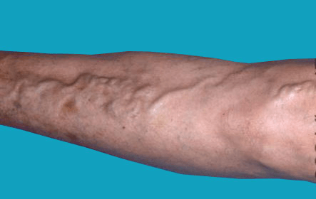
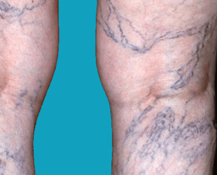

Varicose veins, also known as varicoses or varicosities, occur when your veins
become enlarged, dilated, and overfilled with blood. Varicose veins typically
appear swollen and raised, and have a bluish-purple or red color. They are often painful.
The condition is very common, especially in women. Around 25 percent of all adults
have varicose veins. In most cases, varicose veins appear on the lower legs.


In general, doctors are conservative when treating varicose veins. You’ll probably be advised to make changes to your lifestyle, instead of trying more aggressive treatments.
The following changes may help prevent varicose veins from forming or becoming worse:
Your doctor may advise you to wear special compression socks or stockings. These place
enough pressure on your legs so that blood can flow more easily to your heart.
They also decrease swelling.
The level of compression varies, but most types of compression stockings are
available in drugstores or medical supply stores.
If lifestyle changes aren’t working, or if your varicose veins are causing a lot of
pain or damaging your overall health, your doctor might try an invasive procedure.
Vein ligation and stripping is a surgical treatment that requires anesthesia. During
the procedure, your surgeon makes cuts in your skin, cuts the varicose vein, and removes
it through the incisions. Although updated variations of vein-stripping surgeries
have been developed, they are less commonly performed because newer, less invasive
options are available.